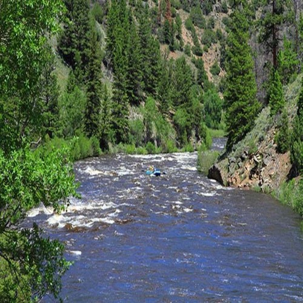

Solmon river
Nestled deep in the Frank Church Wilderness of No Return winds the Salmon river. The Salmon was given the nickname long ago as the River of No Return by the people living near it because of the number of folks that came to visit and fell so in love with the rugged beauty of the river that they never left.
Salmon River 5 night trip (The dates listed will be the date that you spend the night in Salmon. The launch date is the following day.) 2016 Pricing and Dates Regular Rate: $1,540 Trip Dates June 3, 10, 17, 24 July 2
Grand canyon
Grand Canyon river rafting combines world-class whitewater with breathtaking scenery to make one truly unforgettable river experience. The canyon is filled not only with exhilarating whitewater rapids, but with side canyons and ancient indian ruins accessible only by river.

GRAND CANYON THREE-NIGHT TRIP: 2016 Pricing and Dates Grand Canyon 3 night trips: $1,475 April 30 May 13, 20, 27, 30 June 3, 10, 17, 24, 28 July 1, 8, 15, 22, 29 August 5, 12, 19, 26 September 9, 17